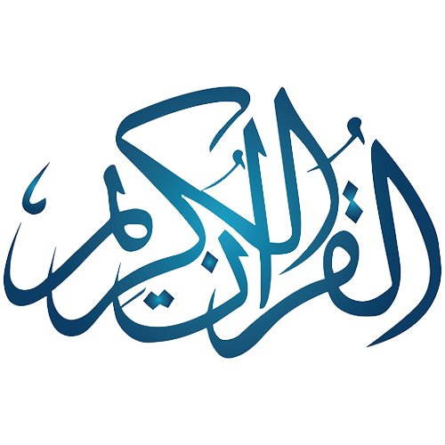

T
he
N
oble
Q
uran
Home
About Us
Quran Reciters
Log In

Q
uran
R
eciters
Mishari Rashid al-`Afasy
Abu Bakr Al-Shatri
Ssha`ud a-Shuraym
Khalifah Taniji
Abdur-Rahman as-Sudais
Mishari Rashid al-`Afasy
Mishari Rashid al-`Afasy
Mishari Rashid al-`Afasy
Mishari Rashid al-`Afasy